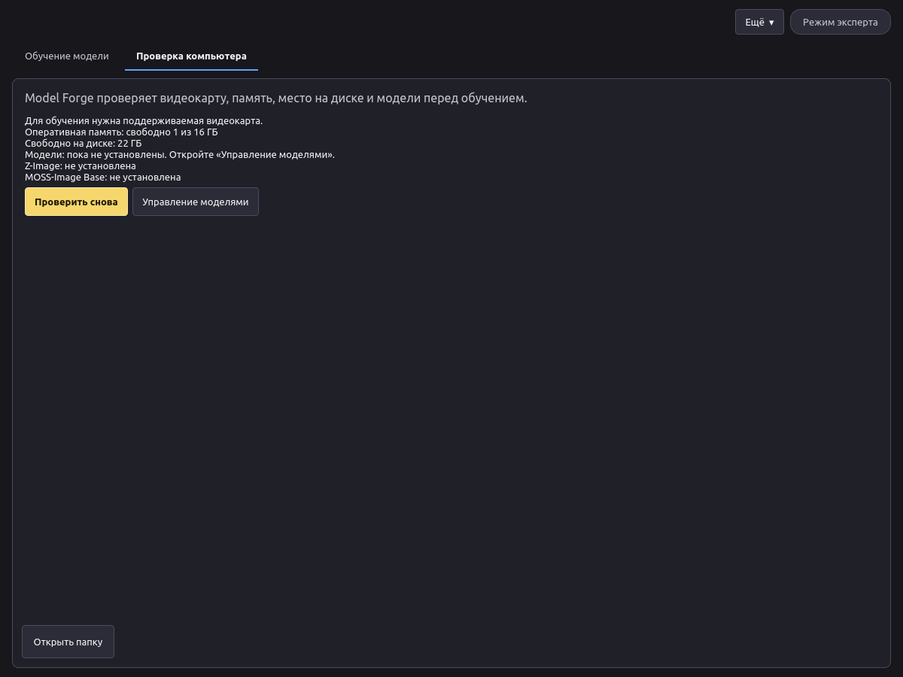
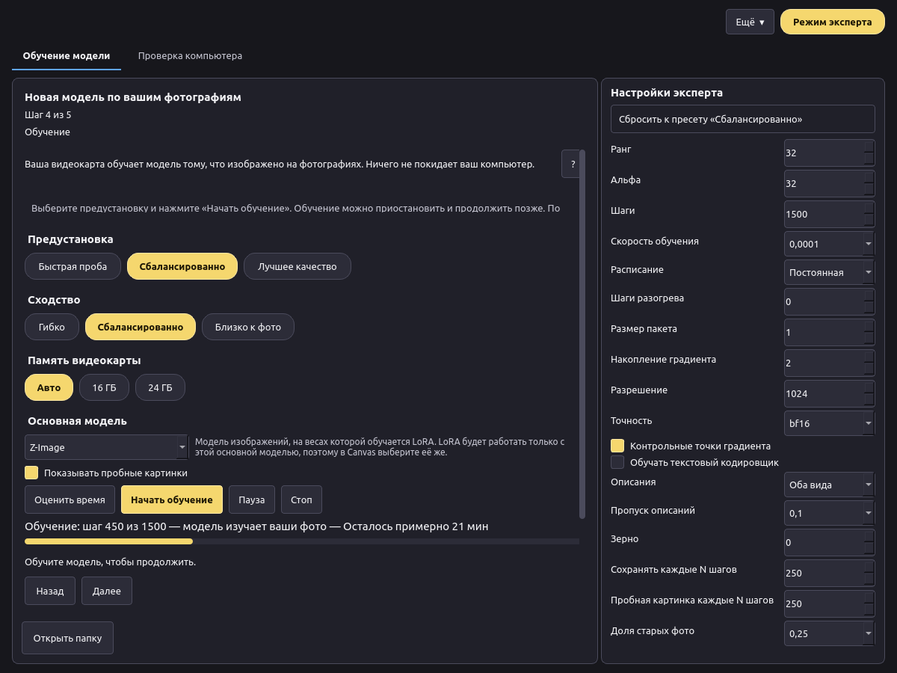
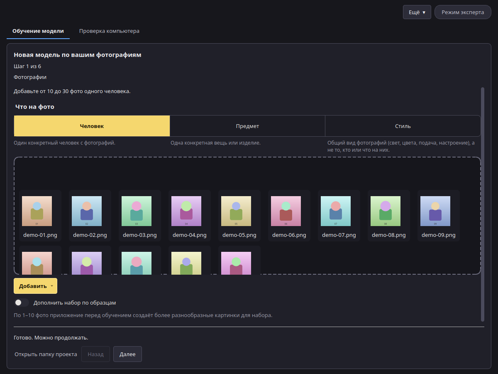
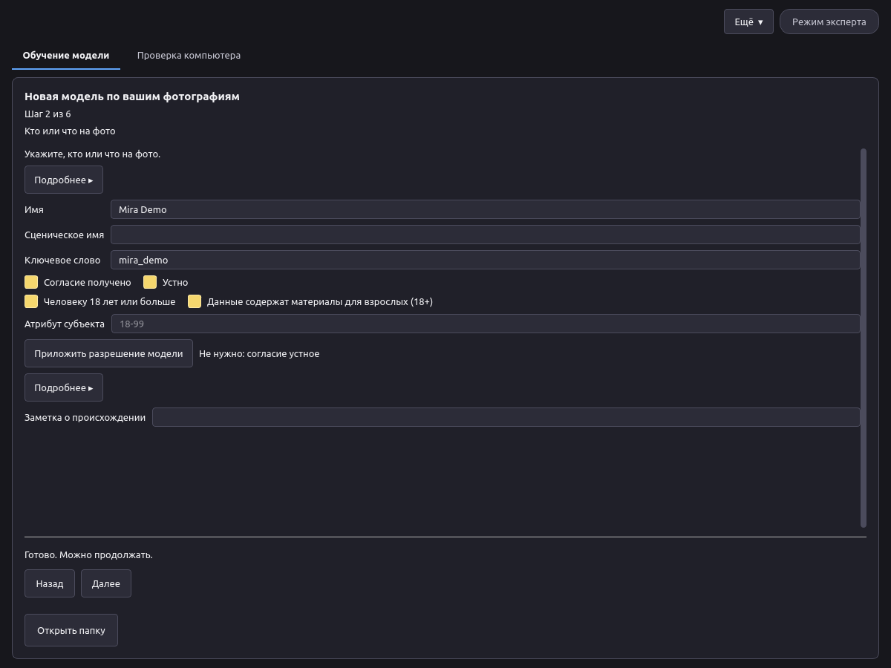
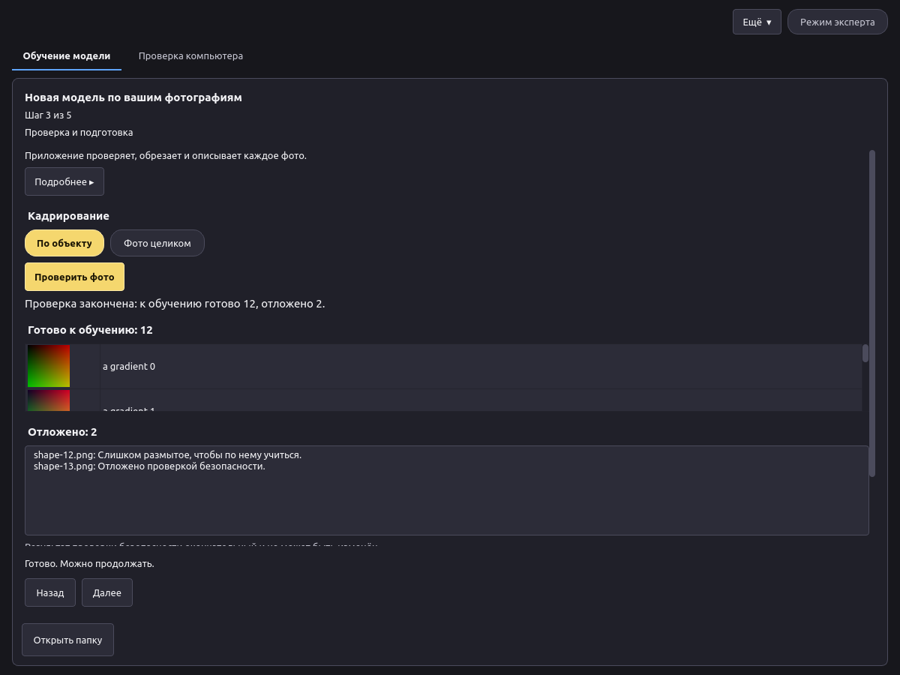
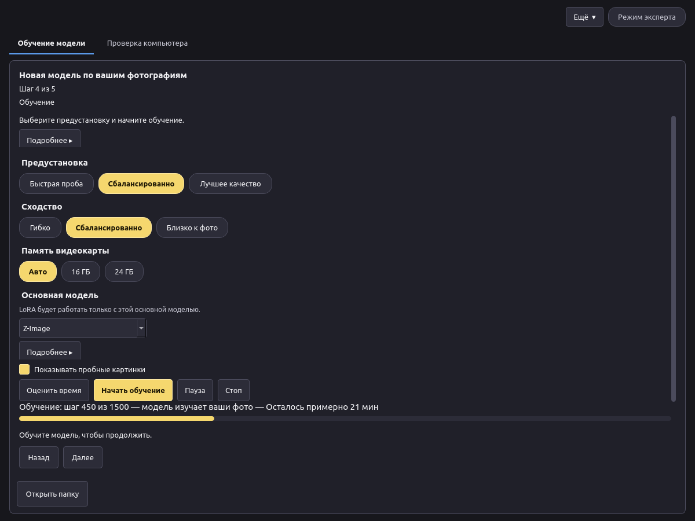
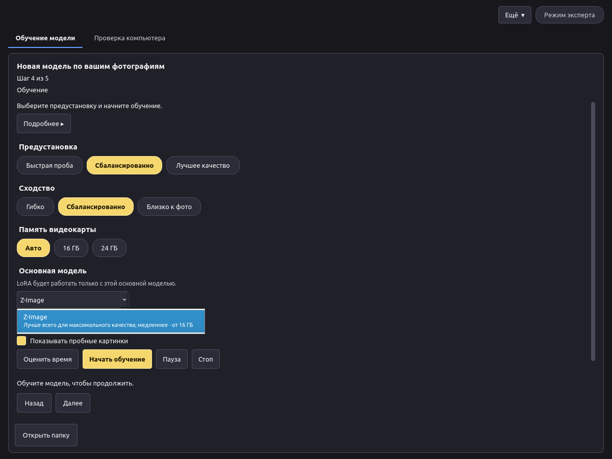
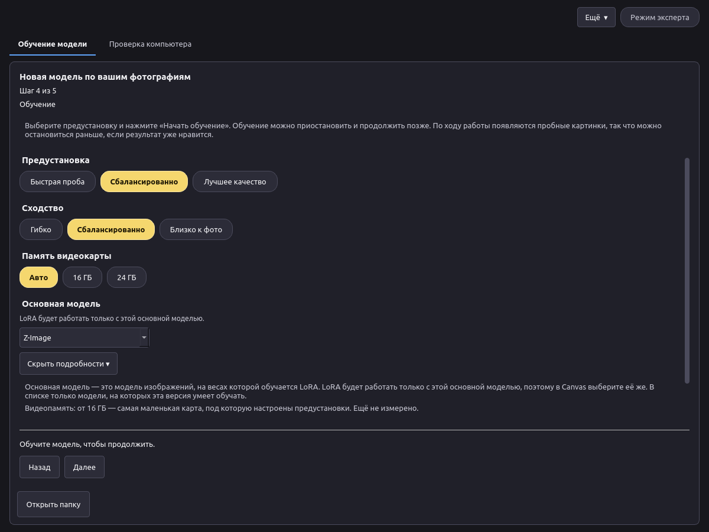
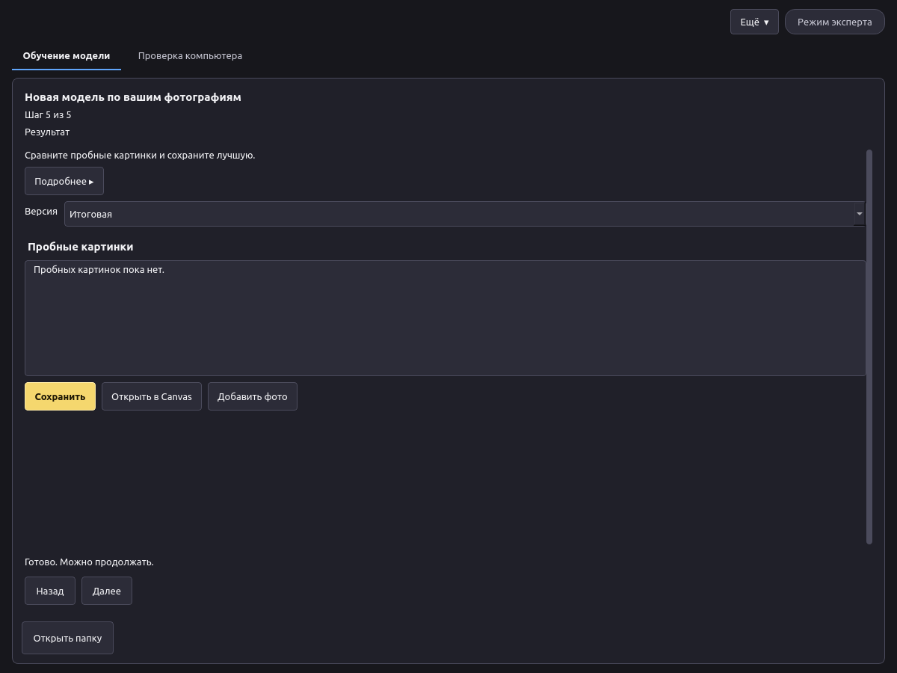

Версия 0.1. English version.
Картинки с пометкой Место для снимка экрана будут добавлены позже.
Model Forge учит модель для картинок чему-то новому по вашим фотографиям: человеку, предмету или стилю. Результат — небольшой файл-дополнение, LoRA. Его можно использовать в VOXPrint AI Canvas, чтобы создавать новые картинки с этим человеком, предметом или в этом стиле.
Всё происходит на вашем компьютере. Фотографии, описания и обученная модель никуда не отправляются.
В Model Forge есть и другие инструменты для опытных пользователей (преобразование моделей, замеры). Это руководство посвящено обучению LoRA.
Требования
| Минимум | |
|---|---|
| Система | Windows 11 24H2 или новее, 64-разрядная. На Linux приложение запускается из исходного кода (см. README). |
| Видеокарта | NVIDIA с 16 ГБ видеопамяти (с 24 ГБ быстрее), серия RTX 30 или новее |
| Драйвер | Актуальный драйвер NVIDIA |
| Диск | Около 45 ГБ свободного места: около 35 ГБ на модели, плюс приложение и ваши проекты |
| Интернет | Нужен только для установки и первой загрузки моделей |
Данные о памяти и времени будут уточнены после итоговых испытаний на видеокарте.
Установка в Windows
VoxprintModelForgeSetup.exe и подтвердите запрос администратора.C:\Program Files\VOXPrint AI Suite\Model Forge, затем загружает Python и нужные библиотеки. Это занимает несколько минут. Не отключайте интернет.Если установка не удалась, установщик покажет путь к журналу: C:\Program Files\VOXPrint AI Suite\Model Forge\setup-work\install.log.
Место для снимка экрана: окно установщика во время установки.
Чтобы удалить приложение, используйте Uninstall VOXPrint AI Model Forge в той же папке меню «Пуск» или параметры Windows. Ваши проекты и загруженные модели остаются на месте (см. раздел 7).
Для обучения Model Forge нужны модели. Их нет внутри установщика, поэтому он небольшой. При первом запуске откройте вкладку Проверка компьютера и нажмите Управление моделями. Откроется загрузчик моделей VOXPrint (MDL) со списком недостающего.

| Модель | Что делает | Источник | Лицензия | Размер |
|---|---|---|---|---|
| Z-Image (base) | Модель для картинок, на которой обучается LoRA | Tongyi-MAI/Z-Image | Apache-2.0 | 20,5 ГБ |
| Qwen3-VL-4B-Instruct | Пишет описания фото и проверяет каждое фото | Qwen/Qwen3-VL-4B-Instruct | Apache-2.0 | 8,9 ГБ |
| MiVOLO v2 | Оценивает возраст по лицу (проверка безопасности) | iitolstykh/mivolo_v2 | Apache-2.0 | 0,1 ГБ |
| YuNet (2023mar) | Находит лица для проверки возраста | opencv/opencv_zoo | MIT | меньше 1 МБ |
| Florence-2-large | Запасной автор описаний | microsoft/Florence-2-large | MIT | 3,1 ГБ |
| MOSS-Image Base | Вторая основная модель (необязательная, появится позже) | OpenMOSS-Team/MOSS-Image-Base | Apache-2.0 | 27,2 ГБ |
%LOCALAPPDATA%\Voxprint\models. Другие приложения VOXPrint используют ту же папку, поэтому каждая модель загружается один раз. Если закрыть окно загрузчика, загрузка продолжится в фоне, а после обрыва связи возобновится.Место для снимка экрана: «Управление моделями» с моделями Model Forge.

Проверка безопасности (раздел 5.3) работает одинаково в обоих режимах. В режиме эксперта нет настроек безопасности.
Начните с Ещё → Новая модель. Шаги показаны вверху окна (Шаг 1 из 6 … Шаг 6 из 6). На каждом шаге видна одна короткая строка. Подробнее ▸ под ней открывает полное пояснение; по умолчанию оно свёрнуто. У выбора субъекта и основной модели есть свои Подробнее ▸.

Хорошие фото — хорошая модель:

Введите Имя или Сценическое имя (достаточно одного). Ключевое слово — это слово, которое вы потом напишете в Canvas, чтобы вызвать модель; приложение предложит его само.
Обучайте модель только на людях, которые на это согласились, и только на фото, которые вы вправе использовать.
Model Forge никогда не обучается на несовершеннолетних. Для каждого фото любого вида перед обучением работают две независимые проверки:
Фото используется, только если обе проверки согласны, что каждый видимый человек явно взрослый (выглядит на 20 лет или старше). Если хотя бы одна проверка сомневается, фото откладывается с причиной «Отложено проверкой безопасности». Если проверка находит явный признак несовершеннолетнего, весь проект блокируется. Если модели проверки не установлены, подготовка не начинается.
Эта проверка включена всегда. Отметки на шаге 2 на неё не влияют, и отключить её нельзя. Иногда откладываются и фото взрослых — например, если лицо выглядит молодо, лицо маленькое или отвёрнуто, или плохое освещение. Так задумано: проверка скорее отбросит хорошее фото, чем пропустит сомнительное. Замените отложенные фото более чёткими фото того же человека.
Фото также откладываются, если они не открываются, слишком маленькие, слишком размытые или почти совпадают с другим фото.

Нажмите Проверить фото. Приложение проверяет каждое фото, обрезает его (По объекту или Фото целиком) и пишет к нему короткое описание. Ключевое слово добавляется в каждое описание, чтобы модель связала его с вашим объектом.
Перед обучением можно посмотреть обрезанные фото, описания и причины, по которым фото отложены, и убрать любое фото.



- Показывать пробные картинки: во время обучения рисуется несколько картинок, чтобы был виден результат.Нажмите Оценить время, чтобы увидеть прогноз, затем Начать обучение. Полоса показывает шаг, что сейчас происходит и сколько осталось (после первых шагов).

.safetensors с файлом описания (voxprint-model.json), лицензией и уведомлением. Его можно хранить или передавать на условиях лицензии основной модели.Место для снимка экрана: LoRA в Canvas с ползунком силы.
Чтобы улучшить модель позже, нажмите Добавить фото на этом шаге. Обучение продолжится с этой модели на новых фото и части старых.
Если хороших снимков мало, Model Forge поможет собрать набор для обучения.
Полезно знать:
%LOCALAPPDATA%\Voxprint\models\user-models\lora\<имя>\.%LOCALAPPDATA%\Voxprint\state\model-forge\lora\. Если удалить папку проекта, удалятся его фото, описания и версии. Сохранённые в другом месте файлы LoRA не затрагиваются.Место для снимка экрана: «Управление моделями», установленные модели.
%LOCALAPPDATA%\Voxprint\state\model-forge и, если другие приложения VOXPrint их не используют, модели в %LOCALAPPDATA%\Voxprint\models.| Что вы видите | Что сделать |
|---|---|
| «Для обучения нужна поддерживаемая видеокарта» | Используйте компьютер с видеокартой NVIDIA на 16 ГБ или больше и актуальным драйвером. |
| «Модели: пока не установлены» | Нажмите Управление моделями и загрузите недостающие модели. |
| «Проверка безопасности недоступна, поэтому обучение не может начаться» | Загрузите Qwen3-VL-4B-Instruct, MiVOLO v2 и YuNet в «Управлении моделями». |
| «Добавьте ещё хотя бы N фото» | Много фото отложено. Добавьте более чёткие фото (раздел 5.3) или используйте режим эксперта (минимум 5). |
| «Эти фотографии нельзя использовать для обучения» (проект заблокирован) | Проверка нашла признак несовершеннолетнего. Это нельзя обойти. Начните новый проект с другими фото. |
| «В папке проекта остался файл PAUSE» | Снова нажмите Начать обучение в приложении. Если сообщение повторяется, удалите файл PAUSE в папке проекта. |
| Не хватает видеопамяти | Выберите 16 ГБ в «Памяти видеокарты», закройте другие программы, использующие видеокарту, и попробуйте снова. |
| Не хватает места на диске | Освободите место на диске с %LOCALAPPDATA%\Voxprint или удалите ненужные модели в «Управлении моделями». |
| Установка не удалась | Прочитайте C:\Program Files\VOXPrint AI Suite\Model Forge\setup-work\install.log, проверьте интернет и запустите установщик снова. |
| Пробные картинки не похожи на объект | Выберите сходство Близко к фото или Лучшее качество, добавьте более разнообразные фото или возьмите более позднюю версию. |
| Все картинки повторяют фото | Выберите сходство Гибко или более раннюю версию и добавьте разнообразия в фото. |
Можно ли обучить модель на фото человека, найденных в интернете? Нет. Обучайте только на людях, которые согласились, и на фото, которые вы вправе использовать.
Можно ли отключить проверку возраста? Нет. Она всегда включена, в любом режиме.
Почему отложены хорошие фото? Проверка отбрасывает любое фото, в котором не уверена. См. раздел 5.3.
Что-нибудь уходит с моего компьютера? Нет. Из интернета только загружаются модели.
Можно ли использовать LoRA в коммерческих целях? LoRA следует лицензии своей основной модели. У Z-Image лицензия Apache-2.0. Вы также отвечаете за права на фото и согласие людей на них.
Можно ли продолжить обучение позже? Да. Поставьте на паузу и продолжите, или нажмите Добавить фото на шаге результата готовой модели.
Лицензии
| Компонент | Лицензия |
|---|---|
| VOXPrint AI Model Forge | Apache-2.0 |
| Z-Image | Apache-2.0 |
| MOSS-Image Base | Apache-2.0 |
| Qwen3-VL-4B-Instruct | Apache-2.0 |
| Florence-2-large | MIT |
| MiVOLO v2 | Apache-2.0 |
| YuNet | MIT |
Полные тексты лицензий поставляются с каждой моделью и видны в «Управлении моделями». Лицензия и уведомление самого приложения — файлы LICENSE и NOTICE в папке установки.